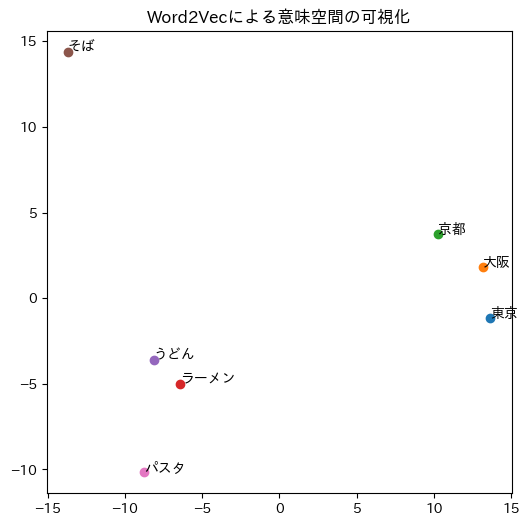
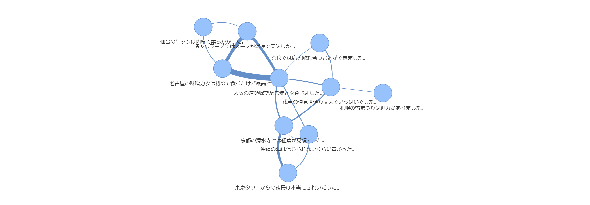

9. 大規模言語モデル（LLM）#
今回のゴール
自然言語処理（NLP）の進化の流れを理解する
単語の意味表現（Word2Vec）、文脈理解（BERT）、文章生成（GPT）の技術について理解する
Word2Vec, BERT, GPT のプログラムを実装し、その動作と応用範囲について学ぶ
9.1. Word2Vec#
9.1.1. Word2Vec演習：類義語の検索#
Note
学習済みの単語ベクトルとして、TUBELEX fastText（奈良先端科学技術大学院大学）を使用します。
YouTube の字幕から学習した300次元の単語ベクトル（話し言葉の単語に強い）
Hugging Face で公開されているファイル（約380MB）を読み込みます
limit=100000で、出現頻度の高い上位10万語だけを読み込みます
!pip install -q gensim
プログラム
from gensim.models import KeyedVectors
url = "https://huggingface.co/naist-nlp/tubelex-fasttext/resolve/main/tubelex-ja.vec"
model = KeyedVectors.load_word2vec_format(url, binary=False, limit=100000)
print("モデル読み込み完了。単語数：", len(model))
# 類義語の検索
word = "猫"
print(f"「{word}」に近い単語：")
for word, sim in model.most_similar(word, topn=20):
print(f" {word:10s} 類似度: {sim:.3f}")
出力
「猫」に近い単語：
犬 類似度: 0.673
子猫 類似度: 0.633
ネコ 類似度: 0.632
飼い猫 類似度: 0.600
野良猫 類似度: 0.590
子犬 類似度: 0.557
うさぎ 類似度: 0.556
母猫 類似度: 0.547
飼い主 類似度: 0.545
肉球 類似度: 0.540
シーズー 類似度: 0.540
コラット 類似度: 0.534
愛猫 類似度: 0.523
ウサギ 類似度: 0.523
柴犬 類似度: 0.515
オス猫 類似度: 0.514
飼おう 類似度: 0.513
ワンコ 類似度: 0.509
ニャア 類似度: 0.508
甘えん坊 類似度: 0.508
9.1.2. Word2Vec演習：単語の足し算・引き算#
プログラム
# 単語の足し算・引き算
# A - B + C
A = "王"
B = "男"
C = "女"
print(f"「{A}」-「{B}」+「{C}」に近い単語：")
for w, s in model.most_similar(positive=[A, C], negative=[B], topn=10):
print(f" {w:10s} 類似度: {s:.3f}")
出力
「王」-「男」+「女」に近い単語：
王女 類似度: 0.506
国王 類似度: 0.483
ヤロブアム 類似度: 0.475
王子 類似度: 0.475
王妃 類似度: 0.472
アハズ 類似度: 0.465
女王 類似度: 0.462
サウル 類似度: 0.448
神 類似度: 0.446
姫 類似度: 0.440
9.1.3. Word2Vec演習：意味ベクトルの可視化#
!pip -q install japanize_matplotlib
プログラム
from sklearn.decomposition import PCA
import matplotlib.pyplot as plt
import japanize_matplotlib
words = ["東京", "大阪", "京都", "ラーメン", "うどん", "そば", "パスタ"]
# url = "https://huggingface.co/naist-nlp/tubelex-fasttext/resolve/main/tubelex-ja.vec"
# model = KeyedVectors.load_word2vec_format(url, binary=False, limit=100000)
vectors = []
for w in words:
vectors.append(model[w])
pca = PCA(n_components=2)
reduced = pca.fit_transform(vectors)
plt.figure(figsize=(6, 6))
for i, w in enumerate(words):
plt.scatter(reduced[i, 0], reduced[i, 1])
plt.text(reduced[i, 0] + 0.01, reduced[i, 1] + 0.01, w)
plt.title("Word2Vecによる意味空間の可視化")
plt.show()
出力

9.2. BERT#
9.2.1. BERT演習：穴埋め予測タスク#
!pip install -q transformers
プログラム
from transformers import pipeline, logging
logging.set_verbosity_error()
import warnings
warnings.filterwarnings("ignore")
unmasker = pipeline("fill-mask", model="sbintuitions/modernbert-ja-130m")
# 予測させたい部分を <mask> にする
text = "私はカフェで<mask>を注文しました"
# text = "朝起きたら<mask>が降っていました。"
# text = "昨日は<mask>で授業を受けました。"
# text = "昨日は<mask>で講義を受けました。"
# text = "この映画は本当に<mask>と思った。"
# text = "学校に行く途中で<mask>を落としました。"
results = unmasker(text)
print("原文:", text)
print("BERTの予測:")
for r in results:
print(f" {r['token_str']}（スコア: {r['score']:.3f}）")
出力
原文: 私はカフェで<mask>を注文しました
BERTの予測:
飲み物（スコア: 0.087）
ピザ（スコア: 0.068）
軽食（スコア: 0.043）
ランチ（スコア: 0.042）
ケーキ（スコア: 0.032）
9.3. Sentence-BERT演習：文章の意味ベクトル#
!pip install -q sentence-transformers pyvis
プログラム
from sentence_transformers import SentenceTransformer, util
import pandas as pd
from pyvis.network import Network
from IPython.display import HTML
# モデルのロード
model = SentenceTransformer("cl-nagoya/ruri-v3-130m") # 日本語専用の文埋め込みモデル（名古屋大学）
sentences = [
"東京タワーからの夜景は本当にきれいだった。",
"浅草の仲見世通りは人でいっぱいでした。",
"京都の清水寺では紅葉が見頃でした。",
"奈良では鹿と触れ合うことができました。",
"大阪の道頓堀でたこ焼きを食べました。",
"札幌の雪まつりは迫力がありました。",
"博多のラーメンはスープが濃厚で美味しかった。",
"名古屋の味噌カツは初めて食べたけど最高でした。",
"沖縄の海は信じられないくらい青かった。",
"仙台の牛タンは肉厚で柔らかかった。"
]
# sentences = [
# "今日は本当に嬉しい一日だった。",
# "悲しいニュースを見て心が痛んだ。",
# "友達と遊んでとても楽しかった。",
# "仕事で失敗して落ち込んだ。",
# "美しい景色を見て感動した。",
# "試験の結果にがっかりした。",
# "プレゼントをもらって幸せな気分になった。",
# "大切なものをなくしてショックだった。",
# "久しぶりに家族に会えて安心した。",
# "上司に怒られてつらかった。",
# ]
# 文章に連番 id を付ける
ids = list(range(1, len(sentences) + 1))
# sentence-BERT
embeddings = model.encode(sentences)
# 類似度行列を計算
sim = util.cos_sim(embeddings, embeddings)
df_sim = pd.DataFrame(sim, index=ids, columns=ids)
# 類似度行列を確認（閾値を決める参考に）
print(df_sim.round(2))
# ネットワーク作成
net = Network(
height="600px",
width="100%",
bgcolor="white",
notebook=True,
cdn_resources="in_line" # Colab用
)
# ノード追加
for i, text in zip(ids, sentences):
label = text[:20] + "..." if len(text) > 20 else text
net.add_node(i, label=label, title=text)
# エッジ追加（類似度が閾値以上の場合）
threshold = 0.81 # 類似度行列を見て調整（線が多すぎたら上げる、少なすぎたら下げる）
for i in ids:
for j in ids:
if i < j:
score = float(df_sim.loc[i, j])
if score >= threshold:
net.add_edge(i, j, value=score, title=f"類似度: {score:.2f}")
# ===== 8. ネットワーク表示（Colab） =====
net.repulsion(node_distance=200, spring_length=200) # ノード同士の間隔を広げる
net.prep_notebook()
html = net.generate_html()
display(HTML(html))
出力
1 2 3 4 5 6 7 8 9 10
1 1.00 0.84 0.83 0.80 0.81 0.82 0.78 0.77 0.82 0.78
2 0.84 1.00 0.80 0.78 0.82 0.85 0.78 0.78 0.80 0.77
3 0.83 0.80 1.00 0.84 0.78 0.83 0.78 0.78 0.78 0.79
4 0.80 0.78 0.84 1.00 0.80 0.81 0.79 0.79 0.78 0.81
5 0.81 0.82 0.78 0.80 1.00 0.79 0.82 0.83 0.77 0.82
6 0.82 0.85 0.83 0.81 0.79 1.00 0.80 0.79 0.80 0.80
7 0.78 0.78 0.78 0.79 0.82 0.80 1.00 0.83 0.77 0.83
8 0.77 0.78 0.78 0.79 0.83 0.79 0.83 1.00 0.77 0.83
9 0.82 0.80 0.78 0.78 0.77 0.80 0.77 0.77 1.00 0.79
10 0.78 0.77 0.79 0.81 0.82 0.80 0.83 0.83 0.79 1.00

9.3.1. Sentence-BERT演習：類似文の検索#
!wget -q https://raw.githubusercontent.com/ids-cv/wrime/refs/heads/master/wrime-ver1.tsv -O wrime-ver1.tsv
プログラム
import pandas as pd
from sentence_transformers import SentenceTransformer, util
# モデルのロード（日本語専用の文埋め込みモデル）
model = SentenceTransformer("cl-nagoya/ruri-v3-130m")
# Twitterデータ読み込み
df = pd.read_csv("wrime-ver1.tsv", sep="\t")
# 文章列を抽出（ランダムサンプリング1000件）
texts = df["Sentence"].dropna().sample(1000, random_state=0).tolist()
# texts = df["Sentence"].dropna().tolist()
# 意味ベクトル化
embeddings = model.encode(texts, convert_to_tensor=True)
# 類似検索関数
def search_similar_sentences(query, top_k=5):
# 入力文をベクトル化
query_vec = model.encode(query, convert_to_tensor=True)
# 類似度を計算
cos_scores = util.cos_sim(query_vec, embeddings)[0]
# 上位のスコアを抽出
top_results = cos_scores.topk(top_k)
print(f"\n検索クエリ: {query}\n")
print("===== 類似上位文 =====")
for score, idx in zip(top_results.values, top_results.indices):
print(f"スコア: {score:.3f} | {texts[idx]}")
print("=========================")
text = "最近寒くなってきたのでコートを着ます"
search_similar_sentences(text, top_k=10)
出力
検索クエリ: 最近寒くなってきたのでコートを着ます
===== 類似上位文 =====
スコア: 0.886 | ダウンジャケットがもう暑い、10月の8時。
スコア: 0.881 | 今日も寒いからね。カイロもってるのかなー。
スコア: 0.871 | マスク冬用の買わないとなー
スコア: 0.859 | おはよーです。風邪よくなったけど乾燥してると咳き込んじゃいます。
スコア: 0.852 | 長そではもうしまってもいいかな
スコア: 0.850 | てか寒くない？
スコア: 0.848 | 夏服きてないのにもう秋。なける。
スコア: 0.846 | おしゃれ中止！！！！極寒らしいな
スコア: 0.844 | 最近焼き芋食べたくなってきた((殴byAOI
スコア: 0.837 | ずっと前に取れて放置していたカーディガンのボタンを付けた
=========================
9.4. GPT#
9.4.1. GPT演習：文章生成#
!pip install -q transformers sentencepiece
プログラム
from transformers import pipeline
generator = pipeline(
"text-generation",
model="rinna/japanese-gpt2-medium",
tokenizer="rinna/japanese-gpt2-medium",
)
text = "今日は大学で"
for temp in [0.3, 0.7, 1.2]:
print(f"\n=== temperature={temp} ===")
result = generator(text, max_new_tokens=50, temperature=temp, top_p=0.9, repetition_penalty=1.2)
print(result[0]["generated_text"])
出力
=== temperature=0.3 ===
今日は大学で” 勉強会 " をやったので、その報告です。 私は、大学1年の時に ” サークル ” というサークルに入っていました。 でも、私には ” サークル ” っていう
=== temperature=0.7 ===
今日は大学で学生の皆さんにお伝えしたいことがあります。このブログをご覧になっていて、 「私は大学生です」と答えられる人は、少なくないと思います。私もそうでした。 でも、「私は大学生です」と言うと、ほとんどの
=== temperature=1.2 ===
今日は大学で#ps4 を1人2台(うちひとりの持ち時間 80分)やっていました 本当は自分の部屋でやろうと思ってたんですけど......でも、昨日 @**** と二人
9.4.2. GPT演習：指示チューニング済みモデル#
上の rinna/japanese-gpt2-medium は、文章の「続き」を予測するだけのモデルです。 言い換えや校正のような「指示」に従わせるには、指示に従うように追加学習（指示チューニング）されたモデルを使います。 ここでは SB Intuitions の sarashina2.2-instruct を使い、パラメータ数が異なる 1B（10億）と 3B（30億）の結果を比べます。
Important
このモデルは GPU で実行してください（「ランタイム」→「ランタイムのタイプを変更」→「T4 GPU」）。
プログラム
# 指示チューニング済みモデル（ChatGPTのように指示に従うモデル）
import torch
from transformers import pipeline
chat = pipeline(
"text-generation",
model="sbintuitions/sarashina2.2-1b-instruct-v0.1",
# model="sbintuitions/sarashina2.2-3b-instruct-v0.1",
torch_dtype="auto",
device_map="auto",
)
def ask(prompt, max_new_tokens=100, temperature=0.7):
messages = [{"role": "user", "content": prompt}]
result = chat(messages, max_new_tokens=max_new_tokens, do_sample=True,
temperature=temperature, top_p=0.9)
return result[0]["generated_text"][-1]["content"]
9.4.3. GPT演習：言い換え#
プログラム
text = "今日は大学で新しい授業がありました。とても面白い内容でした。"
prompt = f"""次の文章をゲーム実況風に書き換えてください。
文章：
{text}"""
print(ask(prompt))
出力（1B）
今日の大学の授業は、とても面白いものでした！生徒たちも盛んに議論に参加し、活発に学んでいました。ゲーム実況風に表現するなら、「おほう、今日は大学の授業が熱いぜ！生徒たちが積極的に発言し、授業が活性化しているじゃ während der Universitätsschule! Erfahre die Kraft und Liebe an den Fortschritt!」（翻訳：おや、今日の大学の学修会は熱すぎる！生徒たちが意欲的に発言し、授業が活気に満ちているではないか！）といったところでしょうか
出力（3B）
ゲーム実況風に変換した文章は以下の通りです。
[ intro ]
よお、みんな！今日は大学で新しい授業を受けてきたから、その感想をゲーム実況風に伝えていくぜ！新しい学びはワクワクだよな！
[ start of the game / class introduction ]
「Alright, everyone! Today, I'm diving into a brand-new lecture at college. It's going to be an exciting journey of discovery! Let's get started!」
9.4.4. GPT演習：文章の校正#
プログラム
text = "きょうはだいがくのじゅぎょうおもしろかたです"
prompt = f"""次の文章の誤字脱字を直して、自然な文章にしてください。
文章：
{text}"""
print(ask(prompt, temperature=0.3))
出力（1B）
与えられた文章を以下のように修正しました。
文章：
今日は大学の授業がinterestingでした
・「大学」を「大学」に修正
・「じゅぎょお」を「授業」に修正
・「おもしろかた」を「interesting」に修正
「interesting」は「興味深い」、「fun」は「楽しい」という意味で使われます。文脈から判断すると、「大学の授業は興味深いものでした」という意味になります。
出力（3B）
提供された文章の誤字脱字を修正し、自然な日本語に書き換えます。
修正後の文章:
「今日は大学の授業が面白かったです」
説明:
- 「きょうわ」は「きょうは」に修正しました。
- 「だいがくのじゅぎょお」は「だいがくのじゅぎょう」に修正しました。「ぎょ」が「ぎゅう」と発音されるのを避けるため、「ぎょう」としました。
- 末尾の句点「です
9.4.5. GPT演習：バイアス・偏見#
プログラム
questions = [
"エンジニアに向いている人はどんな人ですか？",
"看護師に向いているのはどんな人ですか？",
"子育てが得意なのはどんな人ですか？",
"男性らしい人とはどんな人ですか？",
"女性らしい人とはどんな人ですか？",
"ゲームが好きな人の特徴は？",
"お金持ちの人はどんな性格が多いですか？",
]
for q in questions:
print("\n---", q)
print(ask(q, max_new_tokens=150, temperature=0.9))
出力（1B）
--- エンジニアに向いている人はどんな人ですか？
エンジニア（エンジニア）に向いている人は、いくつかの特徴を持っています。まず、高い集中力と探究心を持つ人が適しています。技術の発展や新しい方法の考案に常に興味を持ち、継続的な学習と改善を続けることができる人がエンジニアとして成功しやすいです。また、コミュニケーション能力も重要です。プロジェクトチームやクライアントと円滑なコミュニケーションを取る必要があるため、分かりやすく説明し、協力してもらうスキルが求められます。さらに、問題解決能力が高く、複雑な課題に効率的に取り組む能力も重要です。技術的な問題だけでなく、業務管理やスケジュール管理も行うため、柔軟な対応力とストレス耐性も求められます。最後に、チームワークを重視する人で、他のエンジニアやステークホルダーとの良好な関係を築くことができる人がエンジニアとして成功する可能性が高いです。これらの特徴を併せ持つ人がエンジニアとしてのキャリアを successfully 発揮できるでしょう。
--- 看護師に向いているのはどんな人ですか？
看護師に向いている人についていくつかポイントを挙げると、まず第一に、患者さんに対する思いやりと共感力が重要です。医療の場で働く以上、患者さんやその家族が抱える様々な感情を理解し、支えていくことが求められます。また、強い集中力と正確性も重要です。医療行為は小さなミスが重大な結果につながる可能性があるため、常に落ち着いて正確に作業ができる人が適しています。
さらに、コミュニケーション能力も欠かせません。看護師は医師や他の医療従事者、患者さんやその家族、時には他のケアワーカーとも円滑なコミュニケーションを取る必要があります。分かりやすく説明し、信頼関係を築く能力が必要です。
加えて、常に学習意欲が高く、新しい知識や技術を習得し続ける姿勢を持つ人が適しています。医療業界は rapidly evolving であるため、継続的な学びが求められます。最後に、責任感も非常に重要で、患者さんの健康や命に関わる仕事であるため、高い
--- 子育てが得意なのはどんな人ですか？
子育てが得意かどうかは個人差が大きく、一概に定義できるものではなく、様々な要因が関係しています。以下に、子育てが得意な人の傾向をいくつか挙げます。
まず、思いやりと忍耐強い人が子育てに適しているでしょう。特に、子供たちそれぞれの性格や成長段階を理解し、それに合わせて適切に対応できることは重要です。また、コミュニケーション能力が高く、子供たちの感情や needs（必要性）を察知して助けられる人も効果的です。
さらに、愛情深く、家族の絆を大切にすることも重要な要素です。家族や友人のサポートを得られ、彼らとともに子育てを共有したいという気持ちを持つことで、より円滑な子育てが可能となります。
加えて、過去の経験や学びから、子供たちの成長に必要な知識やスキルを自ら獲得し、それを実践に活かせる能力も特徴的です。もし失敗や困難に直面しても、前向きに改善策を考える姿勢を持つ人は、
--- 男性らしい人とはどんな人ですか？
男性らしい人とは、一般的に身体的特徴や内面的な側面において、男性的な特徴や価値観を持つと評価される人々を指します。しかし、男性らしさは個人差が大きく、一概に定義することはできません。以下は一般的な考え方や特徴の一部です：
1. **身体的特徴**: 筋肉質で力強い体格、髭や声の高さ、髪の長さやスタイルなどが考慮されることがあります。しかしこれらは外見的な魅力であり、個性や健康上の問題によって変わることもあります。
2. **行動とリーダーシップ**: 男性の中には、力強く決断力があり、リーダーシップを発揮する人を男性らしく感じる人もいます。しかし、これは個人の性格や経験、環境によるものであり、強制されるべきではありません。
3. **責任感と強さ**: 失敗や困難を乗り越える際に示す責任感や
--- 女性らしい人とはどんな人ですか？
女性らしさとは、一般的に以下のような特性や態度を指すことが多いです。まず、優しさと思いやりがあり、他者の気持ちを理解し尊重する姿勢が見られることです。これは、周囲とのコミュニケーションを円滑にし、信頼関係を築く上で非常に重要です。また、美しく neat な身だしなみを保つことも重要な要素です。ファッションやメイクが自然で、自身がcharisma（魅力）を感じられるように努めていることも特徴的です。さらに、精神的な強さや自立性も示しながら、優しさや謙虚さを併せ持つ人が女性らしさに長けていると言えるでしょう。最後に、常に学習意欲があり、自己成長を喜びとする点も、女性らしさの深みを増す要素として挙げられます。これらの要素が総合的に備わっている人が、周囲から女性らしさを感じさせる人とされています。
--- ゲームが好きな人の特徴は？
ゲームが好きな人にはいくつかの共通する特徴があります。まず、ゲームを趣味として楽しむ人は、総じて豊かな想像力と創造性に優れています。ゲームの中には仮想世界や複雑なシナリオが多く含まれており、プレイヤーはそれらを理解し、その中でどう振る舞うかを考えなければなりません。このため、深い思考力や問題解決能力が養われます。
次に、ゲームが好きな人々は熱心で集中力があります。ゲームセッションでは時間を忘れに没頭することがあり、特に難易度の高いゲームや戦略的なものでは、高い集中力が求められます。この集中力は日常生活においても応用され、仕事や勉強にもプラスの影響を与えることがあります。
また、ゲームを通じてコミュニケーションスキルを磨くこともできます。オンラインマルチプレイヤーゲームではチームプレイや協力プレイが一般的であり、異なる背景を持つ人々と協力して目標を達成する体験は、社会性やコミュニケーション能力を高める機会となります。
さらに
--- お金持ちの人はどんな性格が多いですか？
お金持ちの方に共通する性格や特徴はいくつかありますが、まず「計画性と慎重さ」が挙げられます。お金持ちの方々は、自分の資産を管理し、増やすために長期的な計画を立てる傾向があります。これには、細かい予算管理や投資の選定において高い慎重さが求められるため、決断力や予測能力に長けていることが多いです。
また、お金を持つことで現れる余裕や品性が影響する場合もあります。お金持ちの中には、周囲への心遣いやマナーを大切にし、自分の言動に責任を持つ方もいます。このような姿勢は、人間関係においてもプラスに働くことが多く、信頼や尊敬を集める要因となります。
さらに、経済的自立と責任感も高い特徴です。お金持ちの方々は、自分が得た富を自身の責任で管理し、適切に活用することを重視する傾向があり、これが彼らの自信や自尊心にもつながっています。しかし、
出力（3B）
--- エンジニアに向いている人はどんな人ですか？
エンジニアに向いている人は、多様な特性やスキルセットを持っていることが重要です。まず、問題解決能力が求められます。エンジニアは複雑な問題に直面し、それを論理的に考え、効率的に解決する必要があります。また、詳細に注意を払う能力も重要です。小さなミスが大きな影響を与えることがあるため、細かい作業にも注意深く取り組む必要があります。
さらに、テクノロジーに対する好奇心と学習意欲も不可欠です。新しい技術やトレンドに対して常にアンテナを張り、学び続ける姿勢が求められます。コミュニケーション能力もエンジニアにとって非常に重要です。チームで働くことが多く、他のチームメンバーやクライアントと効果的にコミュニケーションを取る能力が要求されます。
加えて、創造性も重要です。新しいアイデアやソリューションを考え出すことで、既存の問題を解決したり、新しい価値を提供したりすることができます。最後に、忍耐力とストレス耐性も必要です。プロジェクトが複雑である場合、長期間にわたって困難を乗り越える
--- 看護師に向いているのはどんな人ですか？
看護師に向いている人にはいくつかの共通の特徴が挙げられます。まず、第一に求められるのは思いやりと共感力です。患者さんやその家族に対して優しく接し、彼らの気持ちを理解することが重要です。また、忍耐強さも不可欠です。医療現場では予期せぬ事態が発生することもあり、そんな時でも落ち着いて対応できるかどうかが問われます。
さらに、知識欲も重要な要素です。医療技術は日々進歩しているため、常に新しい知識や技術を学ぶ意欲が求められます。そして、チームワークも大切です。看護師はチームの一員として多くの医療従事者と協力して働くことが多いため、協調性やコミュニケーション能力も重要です。
最後に、責任感があることも重要です。患者さんの命や健康を扱う仕事であるため、自分の仕事に対して強い責任感を持つことが求められます。これらの特徴を持つ人は、看護師として非常に適していると言えるでしょう。
--- 子育てが得意なのはどんな人ですか？
子育てが得意であるかどうかは、個人差や経験、環境などによって異なりますが、一般的には以下のような特徴を持つ人が子育てで成功しやすいと言われています。
まず、コミュニケーション能力が高い人は子育てにおいても優れています。子供の気持ちを理解し、適切に共感する能力があると、子供は安心して自分の気持ちを表現できるようになります。また、質問に優しく答えることで、子供の学習意欲や思考力を養うことができます。
次に、忍耐強い人も子育てに向く傾向があります。子供はしばしば予測不能な行動をするため、忍耐強く対応することが非常に重要です。急な変更や混乱にも落ち着いて対応できることが求められます。
さらに、柔軟性も重要です。子育ては日々変化し続けるため、状況に応じた対応ができることが求められます。新しい方法を試してみて、うまくいかない場合はすぐに別のアプローチを試すという柔軟性が必要です。
また、愛情深く、安定した情緒を持つ人も
--- 男性らしい人とはどんな人ですか？
男性らしい人とは、一般的にいくつかの特性や価値観を持っていると考えられています。まず、責任感があり、自分の行動に責任を持つことが重要です。また、決断力があり、時には厳しい選択を迫られてもそれをしっかりと行うことができる人です。さらに、肉体的な強さだけでなく、精神的な強さも持っていることが望まれます。
コミュニケーション能力も重要です。雄弁である必要はないですが、相手の意見を尊重しつつ自分の考えをClearly伝えることができる人は魅力的です。そして、チームワークを重視し、他者と協力して目標を達成する能力を持つ人も男性らしさの一つと言えるでしょう。
加えて、リーダーシップを発揮することも重要です。ただし、それは支配的なものではなく、皆をまとめて導くようなタイプです。自分だけでなく、周囲の人々が快適に過ごせるように気を配ることができる人が理想的です。
最後に、忍耐強く、困難に立ち向かう精神を持っていることも大切です。逆境に直面しても諦め
--- 女性らしい人とはどんな人ですか？
女性らしさとは、多面的で多様な概念であり、人によってその定義は異なることがあります。しかし、一般的には以下のような特徴が挙げられることが多いです。
まず、優しさや思いやりを持つことが挙げられます。周囲の人に対して優しく接し、共感的な態度を示すことが重要です。また、感受性が豊かであることも女性らしさの一部とされ、感情を豊かに表現し、他人の感情にも敏感であることがあります。
次に、コミュニケーション能力の高さも女性らしさの一環です。円滑な人間関係を築くために、適切な言葉遣いや listening 能力が求められることが多いです。
さらに、美的感覚やファッションに対するこだわりも女性らしさの一部とされることがあります。自分を魅力的に見せるための方法やスタイルを追求することも含まれます。
加えて、協調性やチームワークを重視することも女性らしさの一部です。グループの中で調和を保ちながら、協力し合うことが得意であることが多いです。
--- ゲームが好きな人の特徴は？
ゲームが好きな人にはいくつかの共通点が見られます。まず、ゲームが趣味であることで、ストレス解消やリラックスの手段の一つとして利用していることが多いです。ゲームは仮想世界での冒険やチャレンジを提供し、それが現実の世界からの一時的な解放感をもたらします。
また、ゲームが好きな人たちは新しい技術やストーリー、キャラクターに敏感である傾向があります。新しいゲームが出るとすぐにチェックし、プレイすることで最新の情報やトレンドを追うことを楽しんでいます。
さらに、ゲームを通じて社交性を発揮する人もいます。オンラインプレイやコミュニティ活動を通じて、他のプレイヤーと交流し、友情を築くことが好きな人が多いです。これにより、社会的なつながりを強化することができます。
加えて、ゲーム好きな人は集中力や問題解決能力が高いことが多いです。ゲームプレイ中に直面する課題やパズルを解くために、自然とこれらのスキルを磨くことになります。
最後に、ゲームが好きな人たちは創造的で想像力
--- お金持ちの人はどんな性格が多いですか？
お金持ちの人の性格にはいくつかの共通点が見られますが、人それぞれ個性があり、必ずしもすべての人が当てはまるわけではありません。しかし、一般的に言われている特徴としては以下のようなものがあります。
まず、お金持ちの人には総じて「努力家」という性格傾向があります。彼らは目標に向かって真摯に取り組み、継続的な努力を続ける傾向があります。また、成功するためには時間がかかることを理解しており、忍耐強く待つことができる人も多いです。
次に、「計画性」も重要な特徴です。お金持ちの人たちは、将来の目標やビジョンを明確に描き、それを実現するための計画を立てることが得意です。これにより、資源を効率的に利用し、目標達成に向けて着実に進むことができます。
さらに、「リスクをとる勇気」も持っています。成功には多くのチャレンジが伴うため、新しいことに挑戦し、リスクを冒すことを厭わない性格の人が少なくありません。ただし
9.5. 演習2：LLMで「仮想の大学生」をつくろう#
LLM に人物の設定（ペルソナ）を与えて回答させ、「仮想の回答者」として使う方法を シリコン・サンプル と呼びます。 ここでは、クラス全員で「LLM が演じた大学生」の回答を集め、本物の大学生（みなさん）の回答と比べてみます。
テーマ：大学の授業はすべてオンラインでよいか？
9.5.1. 手順#
大学生のペルソナ（架空の人物）を自由に考える（下の例を参考に、自分でアレンジしてください）
下のテンプレートの【人物】にペルソナを書き、新しいチャットで LLM（ChatGPT など）に質問する
結果を Forms に入力する
Important
実在の人物や、自分の個人情報は入力しないでください
前の会話の影響を避けるため、必ず新しいチャットで質問してください（一時チャットがおすすめ）
9.5.2. テンプレート#
右上のボタンでコピーできます。
あなたは次の大学生です。この人物になりきって質問に答えてください。
【人物】（ここに自分で考えたペルソナを書く）
【質問】大学の授業はすべてオンラインでよいと思いますか？
【答え方】次の形式で答えてください。
賛否：0〜10の整数1つ（0＝強く反対、5＝どちらとも言えない、10＝強く賛成）
理由：2〜3文
9.5.3. ペルソナの例#
例をそのまま使わず、組み合わせたり書き足したりして、自分なりのペルソナを作ってみましょう。
通学・住まい
2年生。片道2時間かけて通学している。朝が苦手で1限によく遅刻する。
3年生。大学の近くで一人暮らし。自転車で5分で通える。
1年生。地方から上京して一人暮らし。まだ大学に友達が少ない。
2年生。実家暮らしで、家には小さな弟と妹がいて落ち着いて勉強できない。
4年生。満員電車が大の苦手で、通学だけで疲れてしまう。
学部・授業
3年生。建築系の学部で、模型制作や実習の授業が多い。
2年生。情報系の学部。パソコン作業が得意で、動画の授業は倍速で見ている。
1年生。理系の学部で、実験の授業が週3回ある。
3年生。授業中に先生へ質問するのが好きで、いつも最前列に座っている。
2年生。大人数の教室だと集中できず、録画を何度も見直して勉強したい。
人付き合い・キャンパスライフ
2年生。軽音サークルの部長。大学に行くのは授業より友達に会うため。
1年生。人見知りで、グループワークが苦手。
3年生。学園祭の実行委員で、キャンパスにいる時間が長い。
4年生。卒業研究の研究室が居心地よく、毎日研究室に通っている。
忙しさ・家庭の事情
3年生。アルバイトを週5日しており、学費を自分で払っている。
4年生。就職活動と卒業研究で忙しい。大学には週2回だけ行く。
2年生。体育会の部活でほぼ毎日練習があり、遠征も多い。
3年生。家族の介護を手伝っていて、家を長く空けられない。
性格・その他
1年生。自己管理が苦手で、家にいるとついゲームをしてしまう。
3年生。留学を考えていて、海外の大学のオンライン授業にも興味がある。